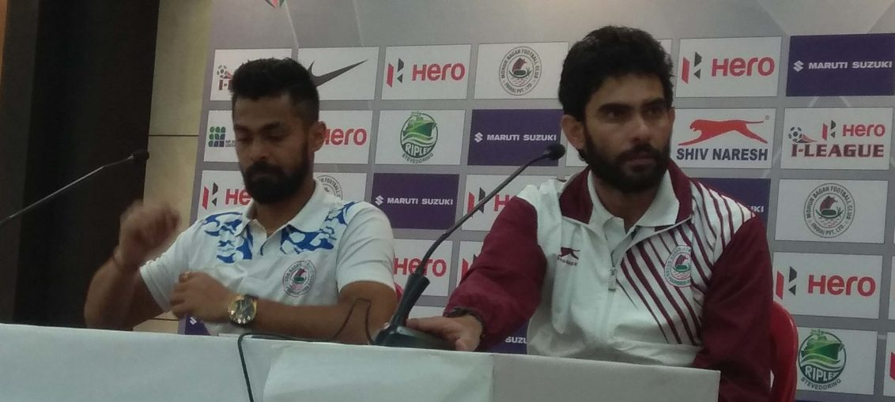

Posted at Date: January 12, 2019
Credit : রাইট স্পোর্টস ওয়েব ডেস্ক
শঙ্করলালকেই কৃতিত্ব দিলেন সোনি

মোহনবাগান – ১ নেরোকা – ০
(সোনি ৭৮)
পরপর দু-ম্যাচে ছয় পয়েন্ট এবং একটিও গোল না-খাওয়া। নতুন কোচ এসে পাল্টেই দিলেন মোহনবাগানকে! সোনি নর্দে অবশ্য পরিষ্কার জানিয়ে দিলেন, ‘কৃতিত্ব শঙ্করলালেরই (চক্রবর্তী)। দলটা শঙ্করই তৈরি করে গিয়েছেন। আমাদের, ফুটবলারদের ব্যর্থতা, চেষ্টা করেও কোচকে আমরা এই জয়গুলো এনে দিতে পারিনি তখন।’ নতুন কোচের জয়গানের মাঝে সোনি ভুললেন না প্রাক্তন কোচের অবদানও।
ম্যাচের সেরা শিলটন পালের মতে অবশ্য ঘুরে দাঁড়ানোর কারণ ফুটবলারদের স্বাভাবিক ছন্দে খেলতে দেওয়ার স্বাধীনতা। প্রশ্ন ওঠা স্বাভাবিক, আগের কোচের জমানায় কি তা ছিল না? শিলটন, ১৩ বছর মোহনবাগানে খেলার অভিজ্ঞতায়, স্বাভাবিকভাবেই জানেন, এমন বিতর্কের ধারেকাছে যেতে নেই! ‘অবশ্যই আগের কোনও কিছুর সঙ্গে তুলনায় যাচ্ছি না। খালিদভাই এসেই আমাকে আস্থা জুগিয়েছিলেন নিজের মতো করে খেলতে বলে। এই ছ’টা পয়েন্ট নিশ্চিতভাবেই আত্মবিশ্বাস বাড়াবে গোটা দলের।’ খালিদও জানালেন, খুব বেশি কিছু বদলানোর চেষ্টা করেননি। ‘গোল খেও না আর নিজেদের খেলা খেলো’, এই দুটি কথাই বারবার বলেছেন ফুটবলারদের।
মোহনবাগান অবশ্য আটকেই যাচ্ছিল নেরোকার রক্ষণে। বাইরের ম্যাচ বলে নেরোকা এক পয়েন্টের জন্য খেলবে, ঠিক। মোহনবাগানকে খেতাবি লড়াইয়ে টিকে থাকতে হলে তিন পয়েন্ট জরুরি। সেই তাগিদ শুরুতে ততটা দেখা যায়নি। ফুটবলে আবার সব রাস্তা যখন আটকে যায়, পার্থক্য গড়ে দেয় কারও ব্যক্তিগত দক্ষতা। যেমন দিলেন সোনি, ৭৮ মিনিটে। ফৈয়জ পাস দিয়েছিলেন কালদেইরাকে। তাঁর পাস থেকে বল পেয়ে সোনি এগিয়ে যান, বক্সে ঢোকার ঠিক আগে ডানদিকে দেখে নিয়েছিলেন ফাঁকা গোল। ডানপায়ের শট রেখেছিলেন নেরোকা গোলরক্ষক ললিত থাপার বাঁদিকে, জোরালো নিচু শট। ললিতের কিছু করার ছিল না।
ওই গোলের ঠিক দু-মিনিট পরই সোনি নিজের ষষ্ঠ গোলও পেতে পারতেন। এবার অবশ্য তিনকাঠিতে রাখতে পারেননি। যেমন ফৈয়জের মাটিঘেঁষা শটও থাকেনি গোলে, তার পরপরই। কোচ জানিয়ে গেলেন, ৬০ মিনিটের পর থেকে মোহনবাগানের বদলে যাওয়ার রহস্য। চোট পেয়ে ওমর এল হুসেইনি বেরিয়ে যাওয়ার পর হেনরি কিসেকা মাঠে নেমে দুই স্ট্রাইকারে খেলতে শুরু করেছিল মোহনবাগান, সোনি জায়গা পেলেন, ফৈয়জের দৌড়গুলোও কাজে লাগল। শঙ্করলালের প্রশিক্ষণে ঘরের মাঠে চার ম্যাচে আট গোল, ইস্টবেঙ্গলের বিরুদ্ধে ম্যাচ ধরলে ১১ গোল খেয়েছিল মোহনবাগান। খালিদ এলেন, গোলের রাস্তা আটকানোর চেষ্টা করলেন এবং সফল প্রথম দুটি ম্যাচেই। অথচ, এই ম্যাচের সেরা আবার শিলটন! অর্থাৎ, মোহনবাগান গোলমুখ কিন্তু ততটাও নিরাপদ ছিল না, ক্লিনশিট সত্ত্বেও। গোল হয়নি, শিলটন দুবাহু প্রসারিত করে আগলেছেন তিনকাঠি। দল পেয়েছে নির্ভরতা।
মাঠে ৫২ মিনিটে অবশ্য এমন ঘটনা যা রেফারি উমেশ বোরা ঠিকঠাক দেখতে পেলে অনেক কিছুই হতে পারত। প্রেস বক্স থেকে এবং পরে টিভিতেও দেখা গিয়েছিল, শিলটন হাত চালিয়েছিলেন কাতসুমির মুখে। শিলটনের কথায়, ‘কাতসুমির সঙ্গে দুর্দান্ত বন্ধুত্ব। চার দিন আগেও কথা হয়েছে। ইম্ফলে আমাদের হারিয়ে কাতসুমি জয়োল্লাস করেছিল বলে এখানে ওদের হারিয়ে আমরা করলাম। আর, আমি যতবারই বল ধরছিলেন, সামনে চলে আসছিল। আমার কিন্তু মাত্র ছয় সেকেন্ড থাকে হাতে বল আসার পর। সামনে চলে আসছিল বারবার, তাই সরিয়ে দিয়েছিলাম হাত দিয়ে।’ ম্যাচের আগে নেরোকা এগিয়ে ছিল, ১১ ম্যাচে ২১ পয়েন্ট নিয়ে, চতুর্থ স্থানে। মোহনবাগান ধরে ফেলল তাদের, ১৩ ম্যাচ পর। উঠে এল পঞ্চম স্থানে। পরের ম্যাচ ২৭ জানুয়ারি। মাঝে ১৪ দিন। ভুল শোধরানো এবং অনুশীলনে জোর দেওয়ার সময়, মত খালিদের। কোচ হিসাবে মুম্বইবাসী বরাবরই জোর দিয়ে এসেছেন গোল না-খাওয়ায়। তাঁর এই নতুন মন্ত্রেই আপাতত উজ্জীবিত মোহনবাগান এবার উঠে এল ইস্টবেঙ্গলের ওপরে।
Top Stories

Calcutta Sports Journalists' Club requests the pleasure of your company at its annual awards functionMore...

Jasprit Bumrah has been declared fit and he will now be available for selection for India's third Test against England at Trent Bridge. More...

Ronaldo has increased Juventus' standing among Europe's elite. More...